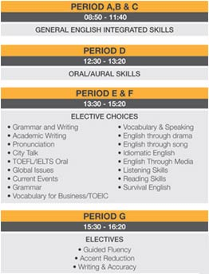

大都市から少し離れ、落ち着いた環境で学びたい方へ。
IH Vancouver
International House Vancouver
(Vancouver/Whistler)
www.ihvancouver.com

ダウンタウンから少し離れたキツラノエリアに位置しており、学校からダウンタウンや山々の眺めは最高。
INTERNATIONAL HOUSE（IH）は、イギリスのロンドンを本部に世界47カ国、140箇所に学校がを展開している組織です。
その為バンクーバー校にもヨーロッパを中心に、様々な国籍の生徒が在籍しています。
IHグループが定めた質の高い講師陣と多様なプログラムがあり、短期間の生徒から長期間の生徒まで様々な目的で多くの学生が学んでいます。
ロケーション
当校はダウンタウンからバスで10分のキツラノエリアに位置しています。
学校周辺は閑静な住宅街の中にあり、落ち着いた雰囲気で英語を学ぶことができます。
学校近くにはカフェやレストランなどもあり、地域の人々の生活に密着したエリアにあると言えます。
観光地でも人気のあるグランビルアイランドへは徒歩で行ける距離にあります。
規模＆国籍比率 (2011年現在)
冬：全校生徒 180-240名
南米23％、ヨーロッパ21％、韓国18％、日本12％、台湾10％、サウジ5％、その他11％
夏：全校生徒 340-370名
ヨーロッパ：23％、韓国22％、日本18％、台湾15％、南米13％、サウジ6％、その他3％
中規模校のサイズといえます。
スタート日
毎週月曜日のスタートが可能です。最短1週間から受講可能です。
初日の登校日にレベルチェックテストを行いレベルが確定します。
オリエンテーションも英語と日本語で行われますので、英語がまだまだの方でも安心です。
クラスとレベル
クラス人数は最大13名。平均クラス人数9-10名
レベルは最大14レベル。(時期によっては11-12レベルとなります)
一般英語コース

Semi Intensive(Block A,B,C) 8：50-11：40
Semi Intensive Plus(Block A,B,C,D) 8：50-13：20
Intensive(Block A,B,C,D,E,F) 8：50-15：20
Intensive Plus(Block A,B,C,D,E,F,G) 8：50-16：20
Block A,B,C：文法、読み、書き中心
Block D;リスニング、スピーキング中心
Block E&F：選択授業
Block G：会話クラス
＊選択授業は自分の弱点科目について強化できるプログラムです。
発音、リスニング、スピーキング、イディオム、文法、書きなどを中心に
約10-15科目の中から選択できます。
当校の生徒の8割以上はIntensiveコースを受講しています。
午前中は同じ先生同じクラスメイトで進行しますが、午後からは先生、クラスメイト共に変わります。
色々な先生から英語が学べるよう工夫されています。
プログラム
※一般英語：初級～上級まで最大14レベル
文法、読み、書き、リスニング、スピーキング力(総合英語力)を高めます。
多くの学生はまずこのコースからスタートします。
※ビジネス英語：中級以上の方で受講可能。
BECテスト対策、財政、経済、法律、貿易などをテーマに学びます。
英語を使う仕事に就かれる方には最適なコースです。
※各種試験対策
TOFEL、ILETS、TOEIC、CAMBRIDGEのテスト対策コース。
TOEICコースは、Block E,F,G(13：30-16：20)のみ、希望者がいた場合に開講します。
※就職準備コース(Career Connect)
ワーキングホリデービザ所有者、インターンシップ希望者などカナダで仕事をされる生徒対象。
ホスピタリティー(飲食業、ホテル、旅行など)関連中心の内容となります。
仕事の探し方、カナダでの接客に必要なスキル、履歴書の書き方 などを学びます。
4週間に一度開講。
＊J-SHINE資格取得コース
中級以上の方で受講可能。2週間の英語+2週間の日本 での授業となります。
4週間の講義で、準資格。プラス50時間の教育実習で正資格取得を目指します。
＊大学準備コース
3レベルあり、1レベル8週間コースとなります。カナダで大学を目指す方、またアカデミックな内容で英語を学びたい方対象です。中級以上にて受講可能。
＊Work and Travel
ワーキングホリデービザ保有者対象。カナディアンロッキーなどのリゾート地で夏の観光シーズン、冬のスキーシーズンに合わせて仕事をするプログラム。渡航のタイミングが重要です。
＊Work and Study
ワーキングホリデー取得資格がない方。就労付き学生ビザを取得の生徒様対象。
就学期間と同じ期間の就労が可能で、有給で働く事が可能です。就学期間5ヶ月+就労5ヶ月以上がベスト。
一般英語と各試験対策コース、就職準備コースは全て同料金。そのためコース変更もスムーズです。
設備
スチューデントラウンジ、ＰＣ(日本語可能)、ワイヤレス(無料)、自動販売機 あり。
日本人カウンセラー常駐。教室数28部屋。
アクティビティー
毎日何か行われます。レベルを超えて、国籍を超えて友達を見つけるきっかけになります。
夏はハイキングや、BBQ、スポーツ大会など。クリスマスパーティー、ハロウインパーティーなどもあります。
冬はスキー／スノボー、パーティーなど。
週末は、ビクトリア、シアトル、ウイスラーなどへ行く日帰りツアーもあります。
滞在方法
ホームステイ(3食付)とスチューデントハウス(自炊)の滞在方法があります。
どちらも通学時間は約30-45分くらいの距離に位置しています。
スチューデントハウスは、様々な国籍の生徒との共同生活で、キッチンやバスルームなど共有となります。
1軒屋の各部屋を8－9名でシェアーしながら利用しており、人気があります。
INTERNATIONAL HOUSE ウイスラー校
INTERNATIONAL HOUSE はバンクーバー校以外にもウイスラー校があり、途中転校も可能です。
ウイスラー校は、冬はスキー／スノボー、夏はハイキングやマウンテンバイクなど行いながら英語を学びたい方にお勧めです。
2010年のオリンピック開催の地で英語を学んでみるのもいいでしょう。
学校、街の雰囲気
全校生徒がさほど多くない為、先生、スタッフと生徒の距離も近く、様々な相談にも乗ってくれるなどきっと皆様の留学のよきサポーターとなってくれるでしょう。 バンクーバーは移民の街。アジア、南米、ヨーロッパ、アフリカなど様々な国からカナダへ移住し、カナダ人として生活しています。こうした国はなかなか他にもありません。留学中は様々な文化を体感できるとともに、英語も学べる街だからこそこのバンクーバーは留学生に人気の街となっています。 治安もよく世界で一番住みやすい街として長年1位を保ってきたこの街に是非留学をしてみては いかがでしょうか。